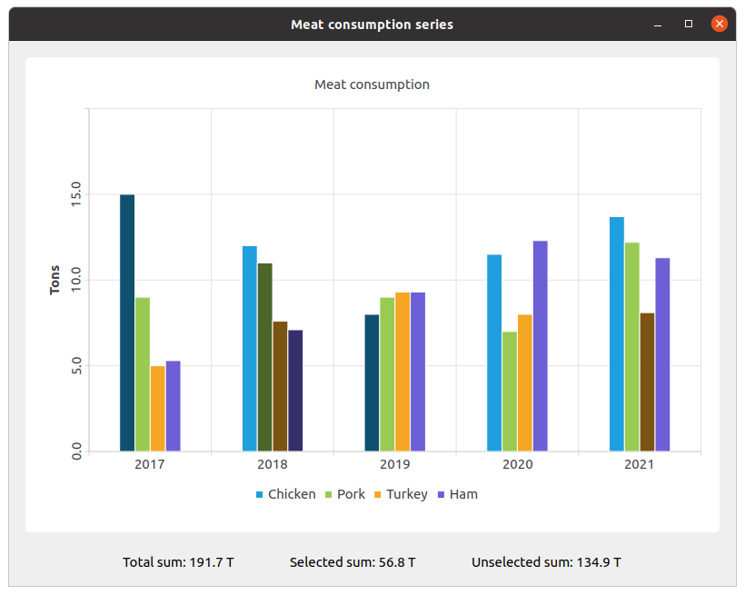

Changing the Color and State of Bars
Note: This is part of the Charts with Widgets Gallery example.
The example shows how to change the color and state of bars using setBarSelected().

We create the sets and fill them with the data. Then we create a series and append data to it.
QBarSet *setChicken = createChickenSet(); QBarSet *setPork = createPorkSet(); QBarSet *setTurkey = createTurkeySet(); QBarSet *setHam = createHamSet(); qreal totalSum = setChicken->sum() + setPork->sum() + setTurkey->sum() + setHam->sum(); QList<QBarSet *> setList = QList<QBarSet *>{setChicken, setPork, setTurkey, setHam}; auto series = new QBarSeries; series->append(setList);
We create the chart and add series to it. Also, we add a title to the chart, set animation for the chart, and align the legend.
auto chart = new QChart; chart->addSeries(series); chart->setTitle(tr("Meat Consumption (Click on bars to select them)")); chart->setAnimationOptions(QChart::SeriesAnimations); chart->legend()->setVisible(true); chart->legend()->setAlignment(Qt::AlignBottom); chart->layout()->setContentsMargins(0, 0, 0, 0);
Here we set the color for the selected bars.
const auto barSets = series->barSets(); for (QBarSet *barSet : barSets) barSet->setSelectedColor(barSet->brush().color().darker());
Next step is adding axes: QBarCategoryAxis for years of measurements and QValueAxis for values range.
QStringList categories = createYearCategories(); auto axisX = new QBarCategoryAxis; axisX->setCategories(categories); chart->addAxis(axisX, Qt::AlignBottom); series->attachAxis(axisX); auto axisY = new QValueAxis; axisY->setRange(0, 20); axisY->setTitleText(tr("Tons")); axisY->setLabelsAngle(-90); axisY->setTitleVisible(true); chart->addAxis(axisY, Qt::AlignLeft); series->attachAxis(axisY);
Then we add the chart view to put the chart in.
auto chartView = new QChartView(chart, this); chartView->setRenderHint(QPainter::Antialiasing);
Here we create a widget for labels of values of selected and unselected bars.
auto labelWidget = new QWidget(this); auto labelLayout = new QHBoxLayout(labelWidget); labelLayout->setAlignment(Qt::AlignCenter); auto totalSumLabel = new QLabel(tr("Total sum: %1 T").arg(totalSum), this); labelLayout->addWidget(totalSumLabel); totalSumLabel->setContentsMargins(0, 0, 54, 0); auto selectedSumLabel = new QLabel(tr("Selected sum: 0 T"), this); labelLayout->addWidget(selectedSumLabel); auto unselectedSumLabel = new QLabel(tr("Unselected sum: %1 T").arg(totalSum), this); labelLayout->addWidget(unselectedSumLabel); unselectedSumLabel->setContentsMargins(54, 0, 0, 0);
We connect selecting of a specific bar with labels of values using a lambda. set->toggleSelection({index}) sets the bar selected.
QObject::connect(series, &QAbstractBarSeries::clicked, series, [=](int index, QBarSet *set) { set->toggleSelection({index}); qreal selectedSum = 0.; for (int i = 0; i < setList.size(); ++i) { auto selectedIndices = setList.at(i)->selectedBars(); for (int k = 0; k < selectedIndices.size(); ++k) selectedSum += setList.at(i)->at(selectedIndices.at(k)); } selectedSumLabel->setText(tr("Selected sum: %1 T").arg(selectedSum)); // Because of rounding errors, selectedSum can result in being bigger than total sum qreal unselectedSum = totalSum - selectedSum < 0 ? 0. : totalSum - selectedSum; unselectedSumLabel->setText( tr("Unselected sum: %1 T") .arg(unselectedSum) ); });
Finally, we create the main layout.
auto mainLayout = new QVBoxLayout(this); mainLayout->addWidget(chartView); mainLayout->addWidget(labelWidget);